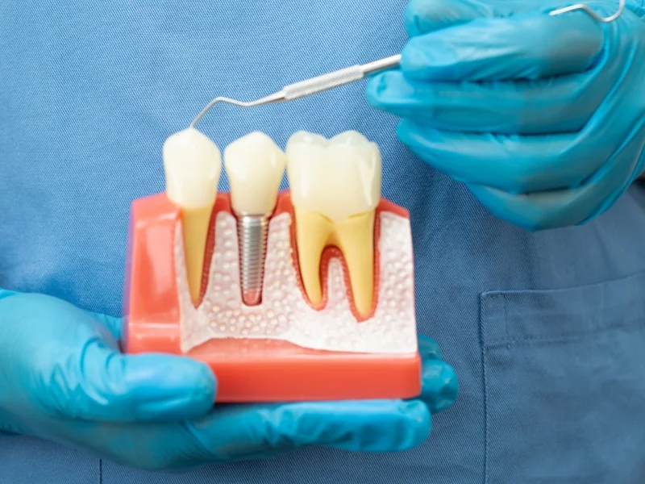

Dr. Batra's Dentistree

Dental implants have changed the face of dentistry over the last 25 years. A dental implant is actually a replacement for the root or roots of a tooth. Like tooth roots, dental implants are secured in the jawbone and are not visible once surgically placed.
They are used to secure crowns (the parts of teeth seen in the mouth), bridgework or dentures by a variety of means. They are made of titanium, which is lightweight, strong and biocompatible, which means that it is not rejected by the body.
Dental implants are replacement tooth roots. Implants provide a strong foundation for fixed (permanent) or removable replacement teeth that are made to match your natural teeth.
Discover why dental implants are considered the gold standard in tooth replacement.
The biggest advantage of an implant is that it imitates physiologic teeth with roots. Instead of a root, you have an implant that supports your tooth.
No need to trim normal adjacent teeth for support. Your neighboring teeth remain completely untouched and healthy.
Placing dental implants stabilizes bone, preventing its loss. They help maintain the jawbone's shape and density, supporting facial structure.
They support the facial skeleton and indirectly the soft tissue structures — gum tissues, cheeks and lips, maintaining your natural appearance.
Dental implants help you eat, chew, smile, talk and look completely natural. No one will know the difference.
This functionality imparts social, psychological and physical well-being, giving you the confidence to smile freely again.
If you are missing a single tooth, one implant and a crown can replace it naturally without affecting neighboring teeth.
If you are missing several teeth, implant-supported bridges can replace them with stability and comfort.
If you are missing all of your teeth, an implant-supported full bridge or full denture can replace them permanently.
Your path to a permanent, beautiful smile in four simple steps.
Thorough examination with digital X-rays and 3D imaging to plan your treatment.
Customized plan designed specifically for your dental needs and aesthetic goals.
Minimally invasive titanium implant placement under local anesthesia.
After healing, your custom crown is placed for a natural, permanent result.
Get answers to common questions about dental implants. If you have more questions, feel free to contact us.
Schedule your implant consultation today and take the first step towards a confident, permanent smile.